이 책은 탁재훈이 상대의 말을 받아치는 장면을 하나씩 쪼개 본 공부 노트입니다. 아는 형님, 짠당포, 노빠꾸탁재훈, 미운 우리 새끼, 각종 쇼츠 모음과 유튜버 '분석좌'의 해설 영상까지 열일곱 편의 대화록에서 장면 이백여 개를 뽑았고, 그중 공부하기 좋은 장면만 골라 기술별로 묶었습니다.
목적은 하나입니다. 회사 회의실에서, 모임 술자리에서, 말문이 막히는 순간에 한마디를 꺼낼 수 있게 되는 것. 그래서 이 책은 웃긴 말을 모아 놓은 책이 아니라, 웃긴 말 바로 앞에 상대가 무슨 말을 했는지를 먼저 보여 주는 책입니다. 인용 상자에서도 늘 상대의 말이 먼저 나오고 탁재훈의 말이 뒤에 나옵니다. 영상 클립도 상대가 말을 꺼내기 몇 초 전부터 시작하게 잘랐습니다. 클립을 틀면 탁재훈의 말이 나오기 전에 한 번 멈추고, 내가 저 자리에 있었다면 뭐라고 받았을지 먼저 생각해 보세요. 이 책을 쓰는 가장 좋은 방법입니다.
글은 영상에 녹음된 말을 받아 적은 기록을 근거로 썼습니다. 따옴표 안의 말은 실제로 나온 말이고, 옆의 작은 꼬리표는 그 말이 나온 영상과 영상 안의 위치입니다. "예:"로 시작하는 문장은 써먹는 법을 보여 주려고 제가 지어낸 예시이므로 따옴표를 붙이지 않았습니다.
음성인식으로 받아 적은 기록이라 잘못 들린 말이 있을 수 있습니다. 바로잡은 곳은 [원문: …]으로 원래 들린 말을 남겼습니다. 대화록에는 누가 말했는지 표시가 없어서 화자는 문맥으로 추정했고, 애매한 장면은 뺐습니다. 원본 영상은 각 방송사와 유튜브 채널의 것이며, 이 책은 개인 공부용으로만 씁니다.
이 책은 모임 대장님이 던진 관점 하나에서 출발했습니다. 요지는 이렇습니다. 코미디를 잘하는 사람은 인간 심리를 깊이 압니다. 행오버의 감독도, 겟아웃의 조던 필도 그렇습니다. 사람을 울리는 건 신파로 쉽게 되지만, 웃기는 건 어렵습니다. 그 어려운 위트를 사람의 모습으로 만들어 놓은 게 탁재훈이고, 위트는 타고나는 재능이 아니라 기술이라서 익힐 수 있다는 것입니다.
대장님은 공부하는 방법도 짚었습니다. 탁재훈을 볼 때 웃긴 말만 기억하지 말고, 그 말 직전에 상대가 뭐라고 했는지를 보라는 것입니다. 상대는 대개 진지하게 무언가를 설명하고 있고, 탁재훈은 그 설명 속 단어 하나를 집어 다른 뜻으로 받습니다. 굳은 회의에서 누군가 체면을 잃지 않고 다시 말을 꺼낼 수 있게 해 주는 한마디도 같은 뿌리에서 나옵니다. 겉으로는 다 비슷한 '재치'처럼 보이지만, 분해해 보면 상황마다 쓰는 기술이 다릅니다. 그래서 '탁재훈론'입니다.
대장님이 든 비유가 이 책 전체의 뼈대입니다. 총도 칼도 없이 궁지에 몰렸을 때 천장의 호롱불을 보고 빠져나오는 능력. 여자가 "총이야 칼이야?" 하고 물으면 대부분의 남자는 둘 중 무엇을 골라야 덜 혼날지 머리를 굴립니다. 탁재훈은 "근데 왜 나한테 총이랑 칼만 줬지?"에서 시작하고, 그러면 몰아붙이던 사람이 먼저 웃어 버립니다. 그리고 위트는 강아지 줄과 같아서, 너무 짧게 쥐어도 재미가 없고 너무 길게 쥐면 뭅니다. 이 세 가지, 곧 상대의 말에서 출발한다, 주어진 선택지 밖을 본다, 줄 길이를 조절한다는 원칙이 2장부터 8장까지 계속 되풀이됩니다.
분석좌의 이론: 전제를 부정하지 않는다
유튜버 분석좌는 같은 현상을 조금 다른 말로 설명합니다. 그가 든 첫 장면은 도박 사건으로 자숙했다 돌아온 탁재훈에게 시청률 내기 질문이 날아오는 장면입니다. 분석좌는 이 질문을 함정이라고 부릅니다. 넘는다에 걸든 안 넘는다에 걸든 내기에 참여하는 순간 도박꾼으로 놀림받고, 거부하면 분위기가 싸해집니다. 그는 이 상황을 이렇게 비유합니다. "마치 칼에 찔릴래 총에 맞을래 이렇게 묻는 것과 비슷하죠" 대장님의 총과 칼이 여기서도 나옵니다.
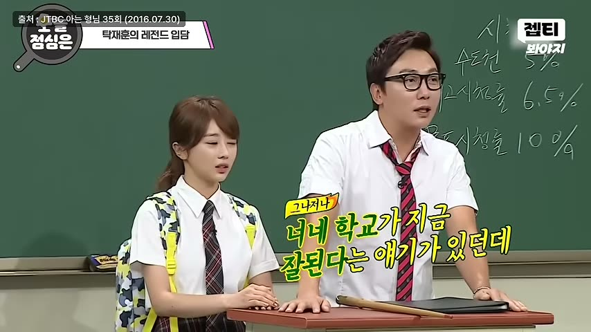
01:05 · 분석좌가 소개한 시청률 내기 함정과 탁재훈의 한마디33초
탁재훈의 대답은 한 줄이었습니다.
"배당[원문: 대당]이 어떻게 되는데?"
분석좌의 해설은 이렇습니다. 보통 사람은 도박꾼이 되지 않으려고 애쓰는데, 탁재훈은 도박꾼이라는 설정을 피하지 않고 오히려 더 깊이 들어갔습니다. 그리고 원래는 질문받던 사람이 질문하는 사람이 됐습니다. "딱 한마디로 주도권을 역전해버린 거죠"
같은 장면을 원래 방송 쪽 대화록으로 다시 보면 흐름이 더 잘 보입니다. 아는 형님에 전학생으로 들어온 날, 멤버가 "우리 학교" 시청률이 5%를 넘겠냐고 묻습니다.
"어? 그럼 우리 학교 앞으로 시청률 이제 5% 넘나 안 넘나요?" — "넘는다에 걸 거야, 안 넘는 다에 걸까요?"
"배당[원문: 배 땅이] 어떻게 되는데?" — "안돼!" — "난 주로 역배 까는 사람이야."
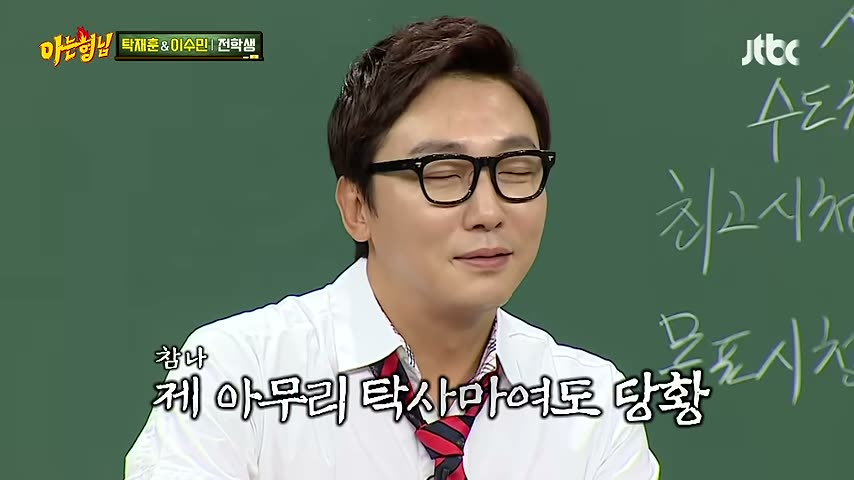
01:09 · 시청률 5% 질문 → 배당이 어떻게 되는데 → 역배 까는 사람31초
예측 질문을 내기판으로 바꾸고, 배당과 역배라는 도박판 말을 자기가 먼저 꺼냅니다. 멤버들의 "안돼!"는 선 근처까지 왔다는 신호입니다. 그런데도 판이 깨지지 않는 이유는, 남이 꺼내기 전에 본인이 먼저 꺼냈기 때문입니다. 마지막 "역배"는 시청률이 안 넘는다는 쪽에 건다는 뜻이라, 은근히 프로그램을 놀리는 말이기도 합니다.
분석좌는 위트를 이렇게 정의합니다. 주어진 전제를 부정하지 않고 그대로 받아들이면서, 그 전제 안에 숨어 있던 다른 가능성을 찾아내는 능력. 그는 대화를 기차에 비유합니다. 누가 말할 때마다 레일이 한 칸씩 깔리는데, 그 깔린 레일을 따라 같은 말만 반복하면 지루하고, 아예 무시하고 엉뚱한 말을 하면 탈선합니다. 위트는 이미 깔린 레일 위에서 뜻밖의 새 선로를 찾는 일입니다. 분석좌의 판정 기준은 이 한 줄입니다. "말도 안 되는데 말이 됩니다"
1단계는 듣기다: 꼬깔콘 장면
분석좌가 가장 강조하는 건 순서입니다. 보통 사람은 뭐라고 받아칠지부터 찾는데, 탁재훈은 의외로 상대의 말을 충분히 듣고 그걸 재료로 씁니다. 화사가 김부각을 좋아한다는 이야기가 나온 장면이 대표적입니다.
"김부각[원문: 김부갑]을 어느 때 먹어요 그럼?" — "진짜 배고플 때 밥이랑 김부각[원문: 김부값]만 먹어도 끝나요" — "지금 그럼 손에 있는 꼬깔콘은 언제 먹어요?"
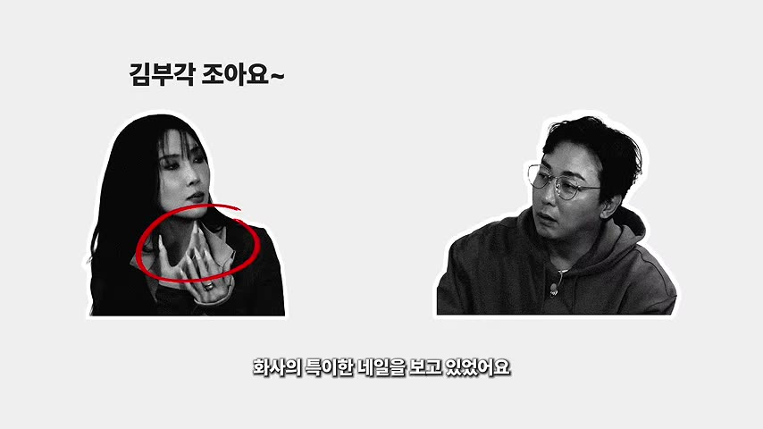
01:13 · 김부각은 언제 먹어요 → 손에 있는 꼬깔콘은 언제 먹어요31초
해설에 따르면 탁재훈은 화사의 길고 뾰족한 손톱을 이미 보고 있었습니다. 그런데 바로 손톱 얘기를 하지 않았습니다. 먼저 상대 이야기(먹는 얘기)에 맞춘 질문을 하나 던져 레일을 깔고, 상대가 대답한 다음에 그 레일을 틀었습니다. 같은 말이라도 처음부터 손톱을 놀렸다면 그냥 외모 지적이었을 겁니다. 먹는 이야기 위에 얹었기 때문에 손톱이 과자가 됐습니다. 분석좌의 결론은 이 한 문장입니다. "즉 위트의 시작은 신박한 드립이 아니라 경청을 통해 먼저 깔려있는 전제를 파악하는 것이죠."
그다음 단계로 그가 주는 주문은 이것입니다. "상대가 한 말이 100% 사실이라면 어떤 골 때리는 일이 생겨날까?" 그리고 마지막 단계는 온도계입니다. 아무리 기발한 말도 분위기에 맞지 않으면 상처가 되므로, 이 대화를 왜 하고 있는지를 늘 확인하라는 것입니다. 대장님의 강아지 줄과 같은 이야기입니다.
이 책의 기술 지도
여섯 개 분석 파일이 각자 제안한 분류를 하나로 합치니 기술은 열한 개로 정리됐습니다. 장마다 이 순서대로 다룹니다.
2장 소리로 받기: ① 소리 비틀기(비슷한 소리의 다른 말로 받기) ② 문자 그대로 받기(비유·관용구·문법을 글자 그대로 받기)
3장 빈칸 채우기: ③ 단정하고 한 번 더 묻기(생략된 사정을 엉뚱하게 채워 단정한 뒤 세부를 하나 더 묻기) ④ 되물어 공 넘기기(대답 대신 질문을 던져 상대가 설명하게 만들기)
4장 판 위에 올라타기: ⑤ 설정 올라타기(상대 말이나 자리의 설정을 사실로 받아 연기하기) ⑥ 끝까지 부풀리기(작은 말을 한 단계씩 키우기, 비유 하나를 끝까지 이어 가기)
5장 판을 바꾸기: ⑦ 틀 깨기(질문·이름·구호의 전제를 뒤집기) ⑧ 판 밖 재료(선택지 밖의 재료를 가져오기) ⑨ 같은 틀로 돌려주기(상대의 문장 틀이나 공격을 그대로 돌려주기)
6장 맞고도 이기기: ⑩ 먼저 인정하고 더 나가기(약점을 부정하지 않고, 흑역사를 먼저 꺼내고, 스스로를 더 낮추기)
7장 줄 길이: ⑪ 온도 조절(선 타기, 감동 비틀기, 체면 세워 주기, 넘었을 때 수습하기)
8장에서는 이 열한 가지를 회사와 모임의 상황별 처방으로 다시 묶고, 연습하는 방법을 정리합니다.
CHAPTER 01
소리로 받기
단어 하나를 낚아채는 법
가장 짧고, 가장 안전하고, 가장 자주 쓰는 기술부터 시작합니다. 상대 말 속 단어 하나를 집어서 다른 말로 받는 것입니다. 분석 파일들을 합쳐 보니 이 기술은 두 갈래였습니다. 소리가 비슷한 다른 말로 받는 쪽, 그리고 같은 말을 다른 뜻으로 받는 쪽입니다.
기술 ① 소리 비틀기
에이핑크 멤버가 나온 자리에서 걸그룹 이름이 줄줄이 나오다가, 탁재훈 본인의 프로젝트 그룹 이야기로 넘어갑니다.
"근데 에스파[원문: 에스화]에 들어가면 제가 당하지 않을까요?" — "아 괜찮아요." — "저는 그냥 스파[원문: 스패]에 들어가선 반신욕 하는 게 낫죠."
'에스파에 들어간다'는 그룹에 합류한다는 뜻인데, 앞 글자 하나를 떼면 '스파에 들어간다', 곧 목욕이 됩니다. 여기서 끝나지 않고 그 새 장면을 사실처럼 이어 갑니다. 반신욕을 하는 사람이 되어 "어때요 제 상체?"까지 갑니다. 단어를 바꾸는 것이 1단, 바꾼 장면 안에서 한 번 더 노는 것이 2단입니다.
같은 쇼츠의 마지막 장면은 소리 사슬입니다. 게스트가 자기 브랜드를 1년 준비해 출시했다는 얘기 끝에 누가 탁재훈에게도 하나 해 보라고 합니다.
"너도 뭐 하나 런치해봐" — "런지?" — "뭘 런칭[원문: 런징]할까" — "렌즈나" — "어 렌즈 좋다"
01:07 · 에스파 → 스파 → 반신욕, 런칭 → 런지 → 렌즈39초
'런칭'을 운동 '런지'로 한 번 비틀고, 다시 '렌즈'로 소리를 이어 실제로 출시할 법한 물건에 착지합니다. 소리 놀이가 마지막엔 말이 되는 상품이 되니 상대도 "렌즈 좋다"고 받아 줍니다. 소리 비틀기는 엉뚱한 데서 끝나면 썰렁하고, 말이 되는 데서 끝나면 박수를 받습니다.
소리 비틀기가 가장 세게 터지는 때는 상대가 앞에서 한 말과 지금 한 말이 겹칠 때입니다. 노빠꾸탁재훈에서 게스트가 이상형을 '배울 점이 있고 존경할 수 있는 사람'이라고 모범답안을 냅니다. 탁재훈은 먼저 "이거 내가 30년 전에 다 썼던 멘트를 그대로 쓰네."로 의심을 깔아 두고, 구체적으로 어떤 스타일이냐고 다시 묻습니다.
"배우분으로 따지자면" — "배우를 좋아하네!"
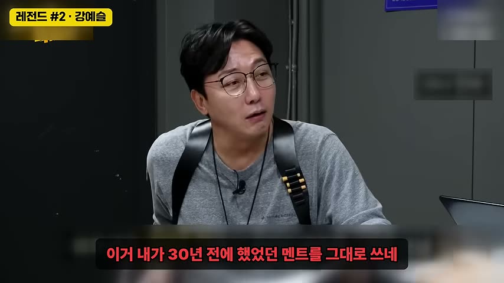
01:12 · 배울 점이 있는 사람 → 배우를 좋아하네29초
'배울 점'과 '배우'가 소리로 겹치는 순간을 놓치지 않았습니다. 앞에서 의심을 깔아 둔 덕에, 이 한마디가 모범답안이 거짓이었다는 증거처럼 들립니다. 혼자서는 그냥 말장난인데, 앞뒤 말을 이어 붙이니 논리가 됩니다.
같은 원리로 짧게 끝나는 예도 많습니다. 녹화 뒤 코인노래방에 간다는 게스트에게 "아 코인노래방[원문: 코인놀래방] 빗썸으로 가세요.", 동전을 가상화폐로 바꿔 들은 것입니다. 자숙 복귀 회차에서 입학 신청서의 "장래희망" 칸을 읽자 "나도 장례가 있나 싶다", 미래를 묻는 말을 자기 처지에 대한 자조로 바꿨습니다. 소리 비틀기에 자기 낮춤을 얹으면 상대를 다치게 할 일이 없습니다.
써먹기. 회의에서 낯선 외래어나 줄임말이 나오면 비슷한 소리의 아는 말로 일부러 잘못 알아듣고, 두 번째에는 말이 되는 쪽으로 착지합니다. 예: 새 TF에 들어오라는 말에, TF보다는 사우나에 들어가고 싶다고 받은 뒤 바로 그래도 TF가 낫겠다고 접는 식입니다.
기술 ② 문자 그대로 받기
두 번째 갈래는 소리를 바꾸지 않고 뜻을 바꿉니다. 상대는 비유로 말했는데 그 비유를 사실로 받는 것입니다. 분석좌는 이걸 '의미 바꾸기'라 부르고 이렇게 요약합니다. 상대가 말하는 의도 말고 들리는 그대로 받는다. 그가 든 예 중 하나가 토크를 몇 개 가져왔냐는 질문입니다.
"한 몇 개 정도 가지고 오셨습니까?" — "아 뭐 한 지금 세 네 개 갖고 왔는데 모자르면 또 차 트렁크에 있습니다."
노빠꾸탁재훈에는 이 기술의 교과서 같은 장면이 있습니다. 게스트가 머리 상태 때문에 별명이 까치둥지였다고 말합니다.
"그래서 저보고 맨날 까치둥지 같은 거 해서 맨들 까치둥지라고 불렀어요." — "아 여기 새가 앉은 적이 있어요?"
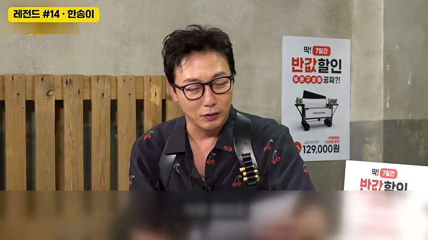
01:31 · 까치둥지라고 불렸어요 → 여기 새가 앉은 적이 있어요?18초
별명이라는 비유를 사실로 받아서, 그 둥지에 진짜 새가 앉았냐고 묻습니다. 상대 말 속 단어 하나만 쓰기 때문에 듣는 사람이 따로 생각할 필요가 없습니다. 짧고, 바로 그림이 그려지고, 상대를 깎지도 않습니다.
비유를 문자 그대로 받으면 상대가 따라 들어오면서 놀이가 되기도 합니다. 게스트가 자기가 '탁재훈의 오른팔'이라고 하고 다닌다는 소문을 확인하는 장면입니다.
"보통 ~이 아니다"는 대단하다는 뜻인데, 이걸 글자 그대로 '아니다'로 읽었습니다. 겁주려던 소개가 '그럼 신경 쓸 필요 없네'로 바뀌고, 이어지는 "뭘 자꾸 신경 써?"로 마무리됩니다.
시제 하나만 바꿔도 됩니다. 미운 우리 새끼에서 결혼하면 하차해야 하는지를 토론하다가 멤버가 이 프로그램에 결혼한 사람이 없다고 하자, 탁재훈이 시제를 바꿔 받습니다.
"결혼을 한 사람이 없죠." — "결혼했던 사람들이 있죠."
"그래서 돌싱포맨 생긴 거 아닙니까?"
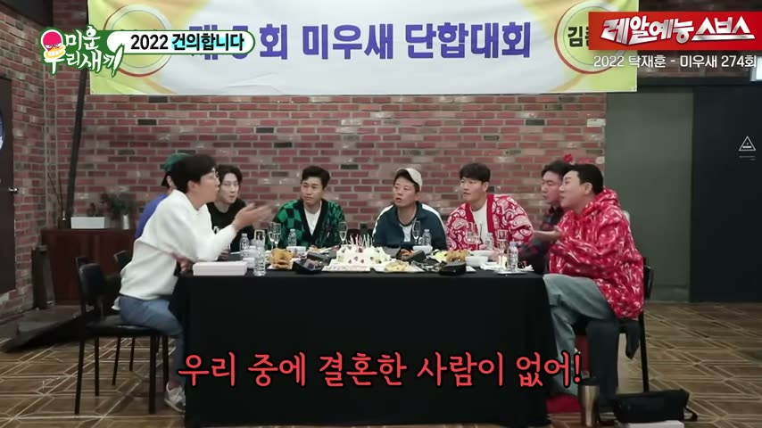
01:09 · 결혼한 사람은 없죠 → 결혼했던 사람들이 있죠25초
'한'을 '했던'으로 바꾸는 순간 돌싱이라는 자기 처지가 드러나고, 자기가 출연 중인 프로그램 이름까지 근거로 들이밉니다. 문자 그대로 받기와 6장의 자기 낮춤이 한 문장에 겹친 예입니다.
이 기술을 쓸 때 주의
분석좌는 같은 단어를 가져와도 실패하는 경우를 따로 보여 줍니다. 상대 단어만 빌려 오고 상대가 깔아 둔 전제는 쓰지 못하면 억지 말장난이 됩니다. '런칭→렌즈'가 터진 건 브랜드를 내라는 전제 안에서 끝났기 때문이고, '배우'가 터진 건 이상형 이야기라는 전제 안에서 끝났기 때문입니다. 그리고 사람 이름으로 하는 소리 비틀기는 상대가 지겨워할 수 있습니다. 이요원의 이름을 세 번 비틀자 상대가 "아니 없어요, 이름 가지고 하는 거예요."라고 질려 한 장면을 기억해 두세요.
CHAPTER 02
빈칸 채우기
말하지 않은 부분을 엉뚱하게 채우거나 되묻는다
모든 말에는 빈칸이 있다
분석좌의 설명을 다시 빌립니다. 우리가 하는 말은 현실 전체를 담지 못합니다. 밥 먹고 왔다는 한마디에도 누구랑, 어디서, 무엇을, 왜가 다 빠져 있습니다. 그는 이 빈칸을 찾는 도구로 육하원칙을 권합니다. 누가, 언제, 어디서, 무엇을, 어떻게, 왜. 하나의 전제에서 여섯 개의 선로가 나온다는 것입니다. 엄정화가 할아버지 서퍼 이야기를 하는 장면이 그 예입니다.
"할아버지들도 이렇게 서퍼 아침에 이제 보드 들고 가서" — "돌아올 때는 이 보드만 돌아오는 게"
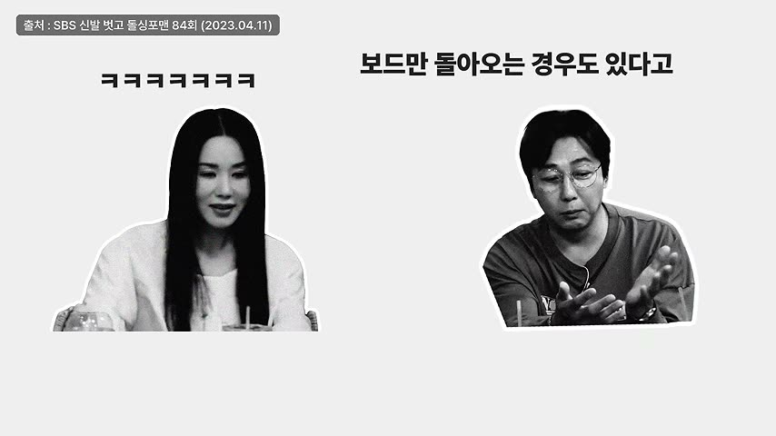
01:14 · 할아버지 서퍼 → 돌아올 때는 보드만 돌아오는 게25초
할아버지가 서핑하러 간다는 말은 그대로 받아들이고, 말하지 않은 '그다음', 곧 돌아올 때를 상상했습니다. 분석좌는 이렇게 짚습니다. "탁재훈[원문: 탁재호]은 그 비어있는 반대편을 상상해서 농담을 만든 겁니다" 1장의 배당 장면도 같은 구조입니다. 무엇을 할지(내기)는 정해졌는데 어떻게 할지(배당)가 빠져 있었고, 탁재훈은 그 빈칸을 물었습니다. 빈칸을 다루는 방법은 크게 둘입니다. 내가 채워서 단정하는 것, 그리고 상대에게 채우라고 되묻는 것.
기술 ③ 단정하고 한 번 더 묻기
지침의 대표 예시가 이 장면입니다. 중국어를 하는 게스트와 얘기하는데 누군가 자기도 중국어를 좀 한다고 끼어듭니다.
"저도 사실 중국어를 조금 할 줄 알거든요" — "아 중국집에 있었어요?"
"주방?" — "주방이야 홀이야"
중국어를 할 줄 안다는 말에서 빠진 빈칸은 '어디서 배웠나'입니다. 탁재훈은 그 빈칸을 가장 생활감 있는 장소, 중국집으로 채웠습니다. 그리고 거기서 멈추지 않고 "주방이야 홀이야"로 한 번 더 구체적으로 물어서 단정을 굳힙니다. 같은 쇼츠에 같은 공식이 하나 더 있습니다. 누군가의 옛날 모습을 보며 다들 느낌이 다르다고 하자 이렇게 받습니다.
쇼츠 분석에서 정리한 공식은 '단정 + 세부 질문'입니다. 단정만 하면 그냥 놀림인데, 세부 질문을 하나 더 붙이면 상대가 그 설정 안에서 대답해야 하는 처지가 됩니다. 듣는 사람은 그 순간 머릿속에 중국집 주방과 자동차 매장을 그리게 됩니다.
술자리 쇼츠에서는 물건 하나로 신분을 단정합니다. 냅킨을 달라고 했더니 상대가 뜻밖의 곳에서 냅킨을 꺼냅니다.
"갖고 다니니?" — "어떻게 여기서 나오냐?" — "좀 이따 만국기[원문: 망국기] 한 번 꺼내봐." — "여기 있음."
01:06 · 냅킨이 나왔다 → 좀 이따 만국기 한 번 꺼내봐21초
물건이 엉뚱한 데서 나왔다는 사실을 '마술사'라는 신분으로 단정하고, 마술사의 대표 소품인 만국기를 다음 순서로 주문합니다. 마술사라는 말은 한 번도 하지 않았는데 다들 알아듣습니다. 상대가 "여기 있음"으로 받아 주면서 장면이 한 번 더 커집니다.
관계를 단정하는 것도 같은 기술입니다. 오랜만에 만난 게스트가 서운한 척하자 탁재훈은 그 말투가 어떤 관계에서 쓰는 말인지를 짚습니다.
"근데 저 없이도 잘 지내시네요?" — "뭐 마누랍니까?"
"밥을 해주셨습니까?"
나 없이 잘 지내냐는 말은 보통 연인이나 부부가 합니다. 그 말투만 보고 관계를 '마누라'로 단정한 뒤, 그 역할을 해 준 게 있냐고 세부를 따집니다. 이 장면은 5장의 클립에 함께 들어 있습니다.
써먹기. 누가 뜻밖의 특기를 말하면 어디서 배웠는지를 가장 생활감 있는 장소로 단정하고, 세부 질문을 하나 더 붙입니다. 예: 동료가 엑셀 매크로를 짤 줄 안다고 하면, 피시방 사장님 하셨냐고 묻고, 카운터였는지 주방이었는지 한 번 더 묻는 식입니다.
기술 ④ 되물어 공 넘기기
빈칸을 내가 채우지 않고 상대에게 채우라고 돌려줄 수도 있습니다. 배당 장면이 그랬습니다. 대답해야 할 사람이 질문을 던지면 이번엔 상대가 설명해야 합니다. 분석좌의 표현대로 주도권이 넘어옵니다. 짧은 클립 모음에서 이 기술이 선명하게 보이는 장면은 게스트가 먼저 '표절'이라는 말을 꺼낸 순간입니다.
"표절도 미리 얘기하면 조금 낫지 않을까요?" — "내가 그냥 머리가 아파서 살짝 베꼈습니다."
01:06 · 표절에 민감하다 → 표절이에요? → 미리 얘기하면 낫지 않을까요?19초
'민감하다'는 말을 '찔리는 게 있다'로 듣고 계속 되묻습니다. 부정할수록 질문이 구체적으로 바뀌고(일본 곡인가요?), 마지막에는 '자수하면 낫다'는 틀까지 씌웁니다. 결국 게스트가 상황극으로 자백해 버립니다. 탁재훈은 단정한 적이 없습니다. 묻기만 했습니다.
곤란한 양자택일에도 되묻기가 통합니다. 미운 우리 새끼에서 한 멤버가 탁재훈에게 이런 질문을 냅니다. 자기가 죽어야 천억이 생긴다면 자기를 살리겠냐 죽이겠냐는 것입니다.
"그러면 나를 살리겠어, 죽이겠어?" — "더 살고 싶어?"
"가서 또 한 번 할 거야. 확인을 할 거야, 정말 진짜 죽었나."
"너 살아 있어봐야 또 빚이야."
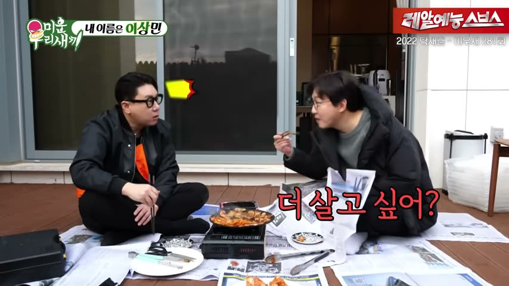
01:15 · 천억 질문: 나를 살리겠어, 죽이겠어? → 더 살고 싶어?40초
질문한 사람은 '당연히 살리지'라는 모범답안을 기대했습니다. 탁재훈은 고르지 않고 "더 살고 싶어?"로 질문을 되돌린 뒤, 한술 더 떠 기대와 정반대 쪽으로 갑니다. 친한 사이여서 성립하는 수위입니다.
써먹기. 상대가 은근한 말을 던지거나 나를 몰아붙이면 바로 대답하지 말고 그 말에서 가장 구체적인 부분을 되묻습니다. 예: 상사가 이번 분기 목표를 넘길 수 있겠냐고 물으면, 넘기면 뭐가 나오는지부터 여쭤봐도 되냐고 받는 식입니다. 배당을 묻는 것과 같은 구조입니다.
이 기술을 쓸 때 주의
단정은 상대가 웃으며 부인할 수 있는 정도여야 합니다. 중국집, 딜러, 마술사는 누구도 상처받지 않는 생활 직업이라 통했습니다. 상대의 실제 약점이나 외모를 단정의 재료로 쓰면 놀림이 됩니다. 손 모양을 보고 살림하는 사람이냐고 단정한 쇼츠 장면은 게스트가 삐지는 쪽으로 흘렀습니다. 되묻기는 더 조심해야 합니다. 쇼츠에서는 민망한 별명을 모르는 척 계속 되물어 상대가 직접 설명하게 만드는 장면도 있는데, 책임을 상대에게 떠넘기는 장치라 회사에서는 쓰지 않는 편이 낫습니다.
CHAPTER 03
판 위에 올라타기
상대 말을 사실로 받아 끝까지 밀어붙인다
분석좌가 준 주문을 다시 떠올려 봅니다. 상대가 한 말이 100% 사실이라면 어떤 일이 생길까. 이 장의 두 기술은 그 주문을 가장 충실하게 따릅니다. 하나는 이미 깔린 설정 위에 올라타 연기하는 것이고, 다른 하나는 작은 말을 한 칸씩 키워 끝까지 가 보는 것입니다.
기술 ⑤ 설정 올라타기
노빠꾸탁재훈은 탁재훈이 '반장', 신규진이 '형사'로 앉아 게스트를 조사하는 경찰서 설정입니다. 탁재훈은 사적인 얘기를 거의 매번 이 설정의 언어로 받습니다. 게스트가 술이 세다는 얘기 끝에 프로필을 읽다가 곧 생일이라고 덧붙입니다.
"술 잘 되세요?" — "저 오늘 약속 있습니다."
"곧 생일이에요." — "왜 여기서 얘기를 해요? 생일인 거는." — "여기는 저 생일 파티하는 데가 아니에요." — "경찰서에요, 경찰서."
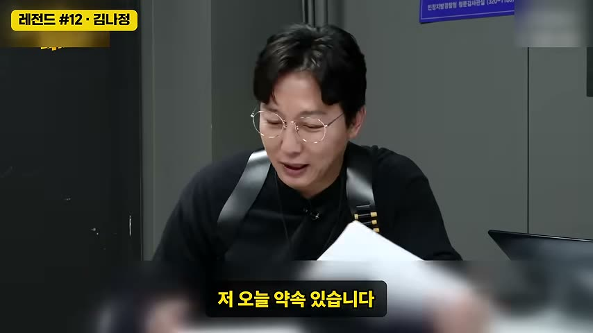
01:29 · 술 잘 되세요? → 저 오늘 약속 있습니다 / 곧 생일이에요 → 경찰서예요23초
축하하는 게 당연한 순간을 조사실 설정으로 차갑게 자르니 기대가 뒤집힙니다. 앞의 "저 오늘 약속 있습니다"도 같은 원리입니다. 아무도 술 마시러 가자고 하지 않았는데 먼저 핑계를 대고 피해서, 상대가 얼마나 술이 센지를 거꾸로 보여 줍니다. 같은 회차에서 노트를 보여 주기 싫다는 게스트에게 "증거 자료로 제출하시겠어요?"라고 한 것도 설정 올라타기입니다.
설정은 내가 만들 수도 있습니다. 자숙 복귀 회차에서 멤버가 예전의 행복으로 돌아가고 싶지 않냐고 묻습니다. 감성적인 질문입니다.
"잘못 돌아가서 2년 전으로 돌아가면 안 돼." — "타임머신 보면 가끔가다 잘못 내리잖아." — "그냥 잘못 내려서 서초동에 내리면 안 돼?"
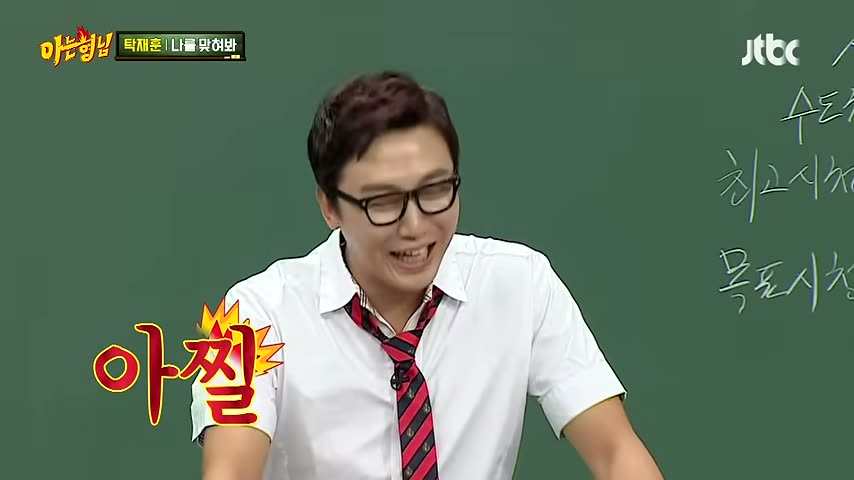
01:18 · 예전 행복으로 돌아가고 싶지 않아? → 타임머신 잘못 내려서 서초동22초
'돌아간다'를 타임머신으로 받고, 도착지를 잘못 내리는 사고를 상상해 사건 무렵의 법원 동네를 떠올리게 합니다. 아픈 과거를 본인이 먼저, 그것도 공상과학 설정으로 꺼내 버리니 다른 사람이 더 찌를 틈이 없습니다. 이 장면은 6장의 '먼저 꺼내기'와도 이어집니다.
써먹기. 회의나 모임에 이미 정해진 콘셉트가 있으면 사소한 일도 그 콘셉트의 용어로 말합니다. 예: 회식 정산 자리에서 영수증을 내미는 동료에게 증빙 자료로 제출하시라고 받는 식입니다.
기술 ⑥ 끝까지 부풀리기
두 번째 기술은 상대 말을 사실로 받은 뒤 한 단계씩 키우는 것입니다. 자숙 복귀 회차의 퀴즈 '내가 가장 잘하는 것'에서 멤버들이 지각을 외칩니다.
"지각!" — "지각은 못 이겨." — "만약에 지각 얘기해서 내가 질 것 같잖아?" — "그럼 난 그냥 전혀 안 나와."
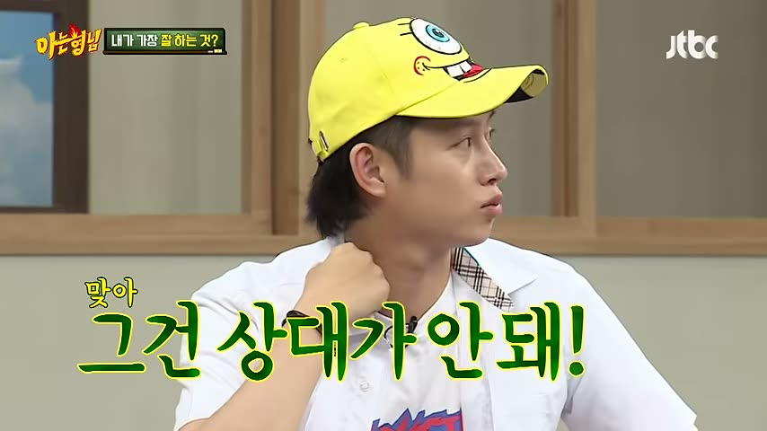
01:31 · 지각은 못 이겨 → 지각으로 질 것 같으면 아예 안 나와17초
지각왕이라는 공격을 부정하지 않고, 지각 대결에서 지면 결석으로 이기겠다고 한 단계 위로 올립니다. 약점이 오히려 아무도 못 이기는 실력처럼 됩니다.
칭찬도 부풀릴 수 있습니다. 미운 우리 새끼에서 체형 비율을 재는데 팔이 길다는 결과가 나옵니다.
"팔이 긴, 길어요 다른 분들보다 많이 길어요" — "저는 여기서 사실 여기서 저기서 전화가 오잖아요 저것도 받을 수 있어요."
"다리는 평균이에요." — "길진 않나요?"
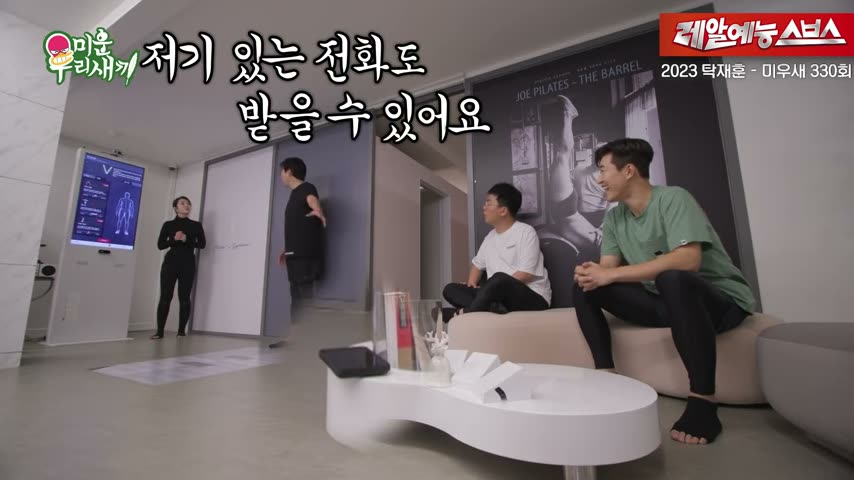
01:04 · 팔이 길어요 → 저기서 오는 전화도 받을 수 있어요29초
측정 결과 한 줄을 만화 같은 그림으로 키웁니다. 바로 다음에 다리가 평균이라는 말에는 두 번이나 되묻는 집착을 보여 대비를 만듭니다. 칭찬받으면 손사래 치지 않고 비현실적인 능력으로 키워 받는 방법입니다.
부풀리기는 혼자 하지 않아도 됩니다. 김장훈이 공연 학생석이 2만 원이라고 하자, 진행석이 그의 목소리를 닭 소리에 빗댄 한마디를 계속 사실로 받아 키웁니다.
"2만 원인데요?" — "근데 굳이 학생들이 그냥 2만원내고" — "그 닭 소리를 들으러 가고 싶을까?" — "그냥 가까운 양계장 같은 데 가면" — "공짜로 들을 수 있죠?"
"김장훈 초복[원문: 초보] 콘서트 이런 걸 했어야 됐는데."
"많은 양계장의 어린 닭들이 지금 죽어가고 있어요."
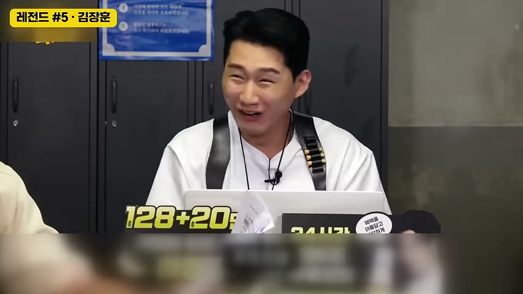
01:17 · 2만 원 → 닭 소리 → 양계장 → 초복 콘서트 → 닭들에게 응원45초
닭 소리 비유 하나가 양계장, 초복 콘서트, 더위에 지친 닭들에게 노래로 응원하기까지 세계관으로 커집니다. 어느 줄을 누가 말했는지는 대화록만으로 다 가를 수 없지만, 탁재훈과 옆자리가 한 비유를 버리지 않고 주고받으며 키운다는 구조는 분명합니다. 분석 파일의 관찰대로, 첫 번째보다 세 번째가 더 크게 터집니다.
비유 하나를 끝까지 쓰는 장면으로 가장 깔끔한 것은 '밑반찬'입니다. 존재감이 없는 멤버에게 탁재훈이 비유를 던지고, 상대가 그 비유를 인정하자 그 안에서 계속 밀고 갑니다.
"밑반찬처럼 앉아있을 거야?" — "어차피 나 밑반찬으로[원문: 밑반찬룸으로] 앉아있는 거야."
"어, 나 어찌됐든 메인 디쉬 아니야." — "먹지도 않은 밑반찬[원문: 밑반차]은 뭘 필요해? 치워!" — "질려, 계속 나와, 앉아 있잖아!"
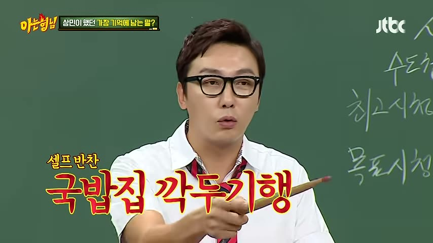
01:22 · 밑반찬처럼 앉아 있을 거야? → 안 먹는 밑반찬은 치워 → 질려30초
상대가 '나는 반찬'이라고 버티면 보통은 비유가 끝납니다. 탁재훈은 버리지 않고 손 안 가는 반찬, 치워라, 매번 나와서 질린다로 식탁 위 장면을 한 칸씩 넘깁니다. 비유를 하나 던지고 상대가 받으면, 같은 비유 안에서 디테일만 바꿔 계속 가는 것. 분석 파일이 '비유 이어달리기'라고 이름 붙인 습관입니다.
이 기술을 쓸 때 주의
설정 올라타기는 모두가 아는 설정일 때만 통합니다. 나만 아는 설정으로 연기하면 혼잣말이 됩니다. 부풀리기는 사다리라서 어디서 멈출지가 중요합니다. 같은 회차에서 헌팅 이야기를 '남자들이 전속력으로 도망친다'는 그림으로 키우다 투신을 떠올리게 하는 단어까지 간 장면은 아슬아슬했습니다. 비극을 떠올리게 하는 단어가 나오기 전에 멈추세요. 그리고 혼자 길게 끄는 부풀리기는 약합니다. 미운 우리 새끼에서 결혼 하차 규정을 연설처럼 길게 끈 대목은 웃음이 크지 않았습니다. 짧게 한 칸 올리고 상대의 반응을 본 다음에 또 한 칸 올리는 것이 요령입니다.
CHAPTER 04
판을 바꾸기
선택지 밖을 보고, 상대의 틀을 돌려준다
2장부터 4장까지는 상대가 깔아 둔 레일 위에서 노는 기술이었습니다. 이 장은 레일 자체를 봅니다. 총과 칼 중에 고르라는 질문을 받았을 때, 고르지 않고 왜 총과 칼만 줬냐고 묻는 쪽입니다.
기술 ⑦ 틀 깨기
대장님의 예처럼 질문의 전제를 문제 삼는 기술입니다. 연애 예능 「솔로지옥」 출연자들과 얘기하던 탁재훈이 프로그램 이름부터 걸고넘어집니다.
'솔로는 지옥'이라는 이름의 전제를 돌싱의 처지에서 뒤집고, 뒤집은 틀을 바로 옆 부부에게 '결혼지옥'으로 넘깁니다. 당연하게 쓰이는 이름이나 구호가 있으면 그거 반대 아니냐로 시작하는 것, 그게 틀 깨기의 기본형입니다. 다만 이 장면에는 뒷이야기가 있습니다. 뒤집은 틀이 곧 탁재훈 자신에게 되돌아오는데, 그 반례는 7장에서 봅니다.
틀 깨기의 가장 짧은 형태는 길게 쌓은 논리에 가장 당연한 한 문장을 대는 것입니다. 제주도에 집을 두고 서울에서 일하는 탁재훈에게 한 출연자가 예능도 지역 주민 우선 채용을 해야 한다며 길게 논리를 폅니다.
"아니, 돈은 서울에서 다 벌고 세금은 제주도에서 낸다? 이거는." — "같은 나라잖아요."
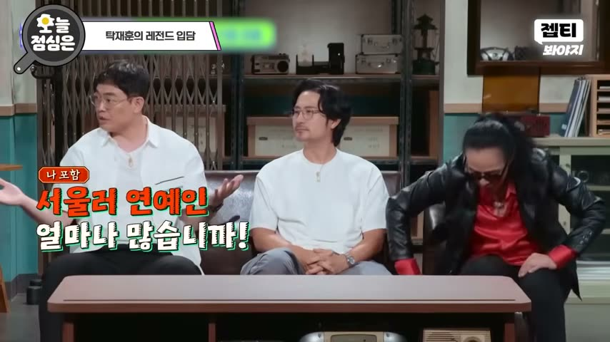
01:39 · 서울에서 벌고 제주에서 세금 낸다? → 같은 나라잖아요33초
정교하게 쌓은 '지역 차별' 논리가 누구도 반박할 수 없는 사실 하나에 무너집니다. 반박하려 들면 말이 길어지는데, 탁재훈은 다섯 글자로 끝냈습니다.
정해진 다짐 문장을 뒤집는 것도 틀 깨기입니다. 결혼하면 하차해야 한다는 암묵적 규칙에 반대하던 탁재훈은 이렇게 선언합니다. "약속할게요! 결혼하면 착실하게 안 살겠습니다!" 결혼하면 철든다는 전제를 거꾸로 뒤집어, 미운 새끼로 남겠다는 서약으로 바꿨습니다.
기술 ⑧ 판 밖 재료
대장님이 말한 호롱불이 이것입니다. 주어진 선택지 안에 답이 없으면 선택지 밖을 봅니다. 미운 우리 새끼의 이구동성 게임에서 '네 글자 여자 아이돌 그룹'이 제시어로 나오는데 탁재훈은 아는 이름이 없습니다.
"네 글자 여자아이돌그룹 … 아 나는 몰라 형 형 그거 있잖아 오마이줄리아"
"오마이 줄리아 빨리 틀어."
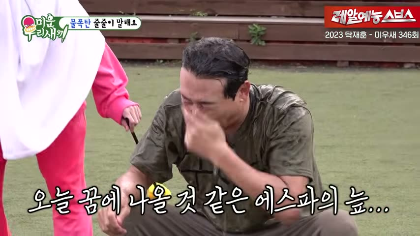
01:09 · 네 글자 여자 아이돌? → 오 마이 줄리아 빨리 틀어40초
아이돌을 대라는 판에서 자기 옛 히트곡을 들고 와 판을 자기 무대로 바꿉니다. 모르는 걸 숨기려고 애쓰는 대신, 내가 가진 재료로 판을 옮겨 버린 것입니다. 회의에서 모르는 주제가 나왔을 때 써먹기 좋은 구조입니다. 예: 최신 도구 얘기가 나오면, 자기는 엑셀 매크로밖에 모르는데 그거라도 보여 드릴까요 하고 판을 옮기는 식입니다.
판 밖 재료는 분위기를 정반대로 가져오는 데도 씁니다. 송년회 건배사를 맡은 탁재훈은 덕담 대신 돌싱 멤버들의 처지를 가져옵니다. "여러분들 서로서로 챙겨야 돼요. 고독사는 없어야 됩니다." 그러자 바로 "근데 건배사 마무리가 뭐 이래?"라는 반응이 나옵니다. 축하 자리에 정반대 재료를 들여와 진지하게 끝까지 밀었기 때문에 그 반응까지 웃음이 됩니다.
다만 1장의 꼬깔콘을 기억하세요. 판 밖 재료가 통하는 건 그 재료가 현장에 있을 때입니다. 화사의 손톱, 자기 히트곡, 멤버들의 처지처럼 그 자리에 있는 사람 모두가 바로 알아볼 수 있는 재료여야 합니다. 현장과 연결이 없는 재료를 가져오면 분석좌가 말한 탈선, 곧 무리수가 됩니다.
기술 ⑨ 같은 틀로 돌려주기
상대가 쓴 문장의 틀을 그대로 써서 되돌려 주는 기술입니다. 노빠꾸탁재훈에서 조사할 게 없으니 가도 된다는데 게스트가 일어나지 않고 생색을 냅니다.
"하도 나와달라 나와달라고 해서 나왔지." — "나와달라나와달라?" — "지금은 제발 가달라 가달라고 하는데 왜 앉아있는 거예요?"
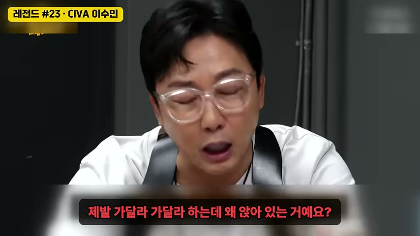
01:48 · 나와 달라 해서 나왔지 → 지금은 가 달라 하는데 왜 앉아 있어요? / 뭐 마누랍니까?32초
'나와 달라 해서 나왔다'는 리듬을 그대로 써서 '가 달라 하는데 왜 안 가냐'로 돌려줍니다. 같은 리듬이라 듣는 사람이 바로 알아챕니다. 상대가 생색내며 쓴 문장은 그 자체가 반격의 재료입니다.
공격을 돌려줄 때도 같습니다. 자숙 복귀 회차의 퀴즈 '상민이가 나한테 했던 말'에서 한 멤버가 이런 오답을 냅니다.
"형, 내가 형 재기시켜줄게." — "에이 그런 건 아니지." — "쟤도 제대로 지 몸도 못 치더만[원문 그대로] 나를 무슨 재기를 시켜주냐고."
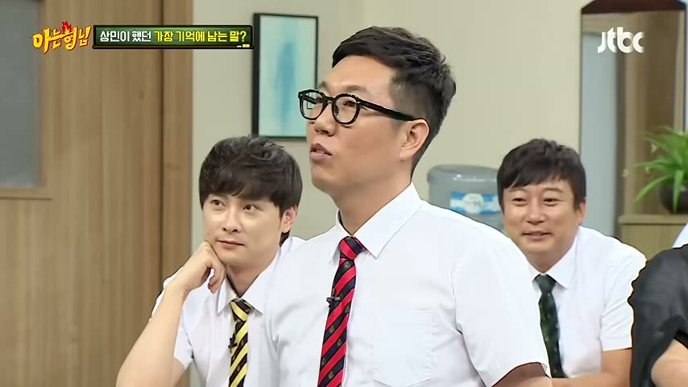
01:22 · 내가 형 재기시켜 줄게 → 지 몸도 못 추스르면서 나를 재기시켜?23초
'재기시켜 준다'는 말에는 '내가 너보다 위'라는 전제가 숨어 있습니다. 탁재훈은 그 전제를 찔러, 도와주겠다는 사람이 더 어려운 처지라는 역전을 만듭니다. 질문에 반박하지 않고 질문 속 인물의 처지를 돌려준 것입니다.
같은 틀을 칭찬에 쓰면 덜 아픕니다. 안선영이 예전에 탁재훈이 자기한테서 '부자 냄새'가 난다고 했다고 전하자 홍진경이 끼어듭니다. "오빠 그런 거 맡아?" — "야 너한테는 김치 냄새밖에 안 나." '냄새가 난다'는 틀은 그대로 두고 홍진경의 김치 사업을 끼워 넣어, 칭찬인지 놀림인지 모를 말이 됩니다. 되묻는 사람에게 한 음절로 꽂는 경우도 있습니다. 오늘 여기 잔챙이들이 있다고 하자 멤버가 누구냐고 묻습니다. "누구누구 있어?" — "너." 설명하지 않고 묻는 사람을 바로 지목하는 타이밍이 전부입니다.
이 기술을 쓸 때 주의
틀을 뒤집기 전에 그 틀이 나에게 어떻게 돌아올지 한 번 생각해 두세요. 솔로가 천국이라고 했다가 그 천국이 자기 이혼을 가리키게 된 장면이 7장에 있습니다. 같은 틀로 돌려주기는 공격이라, 친한 사이가 아니면 상대의 처지 대신 상대가 쓴 문장만 돌려주는 편이 안전합니다. '가 달라 하는데 왜 앉아 있냐'는 상대의 말만 돌려줬지 상대를 깎지 않았습니다.
CHAPTER 05
맞고도 이기기
약점을 부정하지 않고 먼저 꺼낸다
기술 ⑩ 먼저 인정하고 더 나가기
분석좌가 탁재훈 위트의 핵심 비밀로 꼽은 것이 이 기술입니다. 불리한 말을 들으면 우리는 빠져나갈 방법부터 찾습니다. 탁재훈은 반대로 그 전제 안으로 더 깊이 들어갑니다. 분석좌는 이렇게 정리합니다. "결국 핵심은 돌파구를 찾아서 전제에 들어가는 게 아니라" / "전지[전제]에 들어갔기 때문에 돌파구가 보이는 거죠."
이 기술을 공부하기에 가장 좋은 재료가 도박 사건 자숙을 마치고 아는 형님에 전학생으로 돌아온 회차입니다. 멤버들은 자숙, 지각, 도박, 이혼을 쉬지 않고 찌르고, 탁재훈은 거의 한 번도 부정하지 않습니다. 입장하자마자 첫 공격이 날아옵니다.
"혹시 그 자숙고 아이가, 자숙꼬?" — "말해봐라!" — "내가 다니는 학교 어떻게 알았지?"
"자숙코에서 3년 끌고[원문 그대로, 꿇고로 추정] 사고 치고 전학 온 탁재훈이야. 반가워."
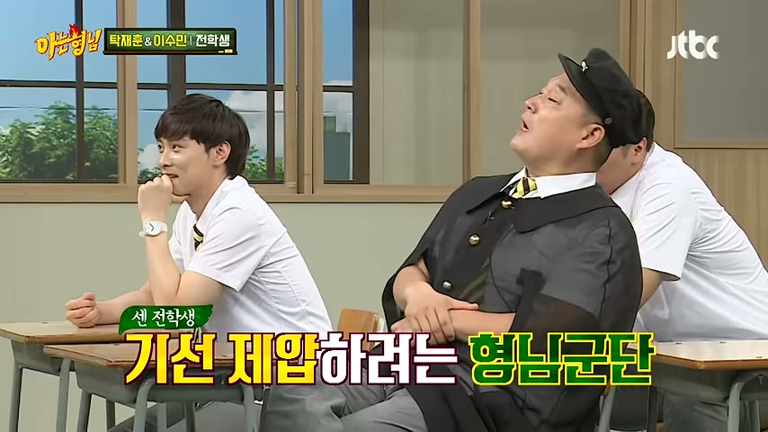
01:08 · 혹시 자숙고 아이가? → 자숙고에서 3년 꿇고 전학 온 탁재훈이야25초
'자숙고'라는 놀림을 진짜 학교 이름으로 받아, 유급하고 사고 치고 전학 온 학생의 자기소개로 완성합니다. 공격 재료가 그대로 명함이 되니 더 공격할 거리가 사라집니다. 바로 뒤에는 그 단어를 선배의 조언으로 바꿔 되돌려줍니다. "그리고 너무 잘 될 때일수록 너무 흥분하지 말고" / "더 자숙하라고." 이어서 함께 전학 온 후배에게 "근데 나는 뭐 사고 쳐서 왔지만 넌 뭐 쳐 서 왔냐?"라고 물어 화살을 옆으로 옮깁니다.
인정하되 틀을 바꾸는 방법도 있습니다. 상습 지각으로 유명했던 탁재훈이 그날은 일찍 왔습니다.
"분명한 3시간 늦게 오겠구나 했는데" — "너무 일찍 온 거야" — "왜 그래 요새?" — "요즘 누가 늦게[원문: 늦겨] 오니?"
"옛날에는 그게 유행이었어" — "늦춰오는 거?" — "내가 유행에 되게 민감하거든."
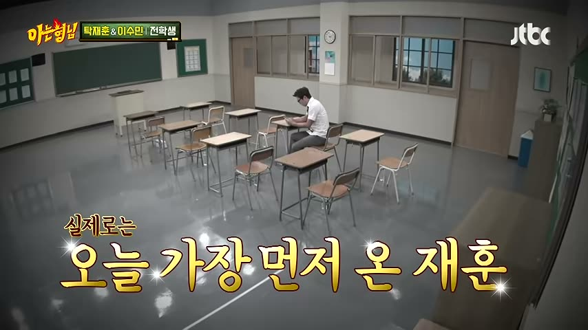
01:10 · 3시간 늦을 줄 알았는데 → 옛날에는 그게 유행이었어22초
지각을 부정하지 않고 '그 시절 유행'으로 재분류합니다. 성격 결함이 시대 탓이 되고, 본인은 유행에 민감한 사람으로 오히려 올라갑니다.
부정하는 척하다 바로 인정하는 반전 리듬도 자주 나옵니다. 짠당포에서 야바위 도구가 나오자 출연자들이 탁재훈을 찌릅니다.
"야바위[원문: 야바이]라고." — "아빠가 좋아하는!" — "야바위를 제가 좋아한다고요?" — "모든 돈 따는[원문: 돈 다는] 거 좋아하잖아!"
"잠깐만요, 지갑 좀 갖고 올게요."
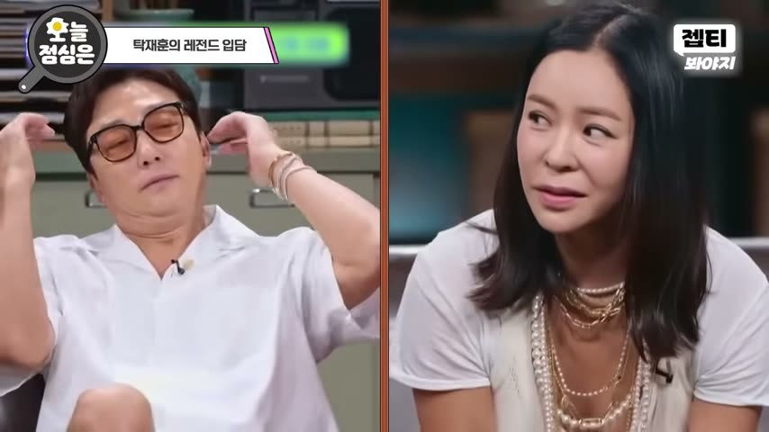
01:52 · 야바위 아빠가 좋아하는! → 잠깐만요, 지갑 좀 갖고 올게요21초
한 번 반문으로 부정하는 척하다가, 상대가 더 세게 들어오자 해명 대신 '바로 참가 준비'로 통째로 인정합니다. 부정에서 인정으로 넘어가는 그 짧은 반전이 웃음의 핵심입니다. 노빠꾸탁재훈의 인스타 장면도 같은 리듬입니다.
처음엔 부정하다가 곧 '기능 개선 건의'라는 형식으로 다 인정해 버립니다. 부정하던 사람이 사용자 불만을 쏟아 내는 순간 거짓말이 들통나고, 그 들통이 웃음입니다. 들킨 일은 부정하다가 아예 그 일의 전문가로 태도를 바꾸는 것, 이것도 인정의 한 형태입니다.
남이 꺼내기 전에 먼저 꺼낸다
분석 파일들이 공통으로 짚은 습관이 있습니다. 탁재훈은 남이 조심스러워할 자기 과거를 먼저, 또는 상대보다 한 발 더 꺼냅니다. 노빠꾸탁재훈에서 게스트가 무당에게 '서른 전에 결혼하면 두 번 한다'는 말을 들었는데 오히려 좋다고 합니다.
"근데 오히려 좋아 아니에요?" — "두 번 할 수 있어서?" — "네!" — "아 요즘 애들 진짜 미치겠네."
"야 그렇게 그게 좋았으면" — "나는 지금 한 여섯 번 했겠다."
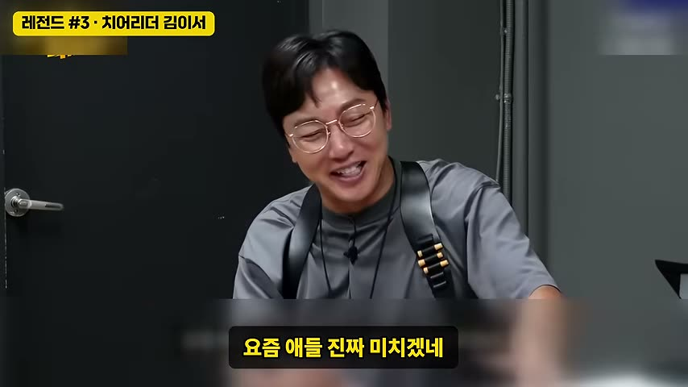
01:14 · 두 번 결혼, 오히려 좋아 → 그게 좋았으면 나는 여섯 번 했겠다31초
상대의 철없는 말을 꾸짖지 않고 본인의 이혼 경력을 거꾸로 끌어와 자학합니다. 남이 건드리기 전에 내가 먼저 쓰는 것입니다. 같은 영상의 다른 장면은 그 반대를 보여 줍니다. 탁재훈이 남의 결혼 이야기를 파고들다가 상대에게 같은 약점을 되돌려 받았을 때는 바로 받지 못했습니다(7장). 자기가 먼저 꺼내지 않은 약점은 막기 어렵습니다.
자기 낮춤도 같은 계열입니다. 홍진경이 자기가 탁재훈을 무시해 온 걸 알았냐고 묻자, 탁재훈은 화내지 않고 과장된 약자 고백으로 받습니다. "형 모른 줄 알았어?" — "나 가서 울고, 실컷 울고 들어와." 상대가 더 들어오자 "너 내 가발 벗긴다, 이제."로 한 번 더 자기를 깎습니다. 대학을 안 나왔다고 찔렸을 때는 이렇게 받습니다. "이 형은 학번 없어." — "주민등록번호 있어." 그리고 "주민번호 어떻게 드릴까요?" 학번이라는 같은 '번호' 범주 안에서 누구나 가진 대체품을 당당하게 내밀었습니다. 주식으로 다 잃었냐는 질문에는 "90%는 아니에요. 80, 89.98.", 작은 차이로 반박하는 척하지만 사실상 더 처참한 인정입니다. 숫자를 정확히 댈수록 웃깁니다.
대장님이 말한 자기 낮춤도 이 자리에 놓입니다. 불편한 진실을 말해야 할 때 "나도 누군가에게 묶인 개 신세"라고 자기를 먼저 낮추면, 상대를 겨냥한 말도 같은 처지의 하소연이 됩니다. 탁재훈이 상대의 처지를 찌르기 전에 자기 처지를 먼저 꺼내 두는 것도 같은 이유입니다.
자숙 복귀 회차의 3단계
분석 파일은 자숙 복귀 회차에서 약점 공격을 받는 순서를 이렇게 정리했습니다.
부정하지 않고 인정한다(자숙고, 내기를 좋아했다, 일부러 전화를 안 받았다).
그 약점을 더 크게 부풀리거나 설정으로 만든다(유행, 타임머신, 지각이면 결석).
공격한 사람의 약점으로 돌려준다(재기시켜 준다는 사람의 처지).
해명이나 사과가 나온 건 선을 넘었을 때 한 번뿐이었습니다. 써먹기. 내 약점을 남이 별명으로 부르면 그 별명을 공식 직함처럼 받아 자기소개에 넣습니다. 예: 지각이 잦다고 놀림받으면, 네 지각 명문 출신이라고 받고, 잘 될 때일수록 시계를 더 보라고 선배처럼 조언까지 붙이는 식입니다.
이 기술을 쓸 때 주의
먼저 꺼내는 약점은 내가 웃으며 말할 수 있는 크기여야 합니다. 아직 아픈 일을 억지로 꺼내면 듣는 사람이 웃지 못합니다. 그리고 내 약점은 마음껏 꺼내도 되지만, 그 자리에 같은 일을 겪은 사람이 있다면 그 사람까지 끌어들이지 않습니다. 자숙 복귀 회차에서 같은 사건에 연루됐던 동료는 도박판 은어가 나올 때마다 처음 들어 본다며 선을 그었습니다.
CHAPTER 06
줄 길이
강아지 줄처럼, 너무 짧지도 너무 길지도 않게
기술 ⑪ 온도 조절
대장님은 위트를 강아지 줄에 비유했습니다. 너무 짧게 쥐면 산책이 재미없고, 너무 길게 쥐면 강아지가 남을 뭅니다. 분석좌는 같은 것을 온도계라고 부릅니다. 탁재훈은 "머릿속에 온도계가 있는 것 같아요", 분위기가 너무 차가우면 데우고 너무 뜨거우면 식힌다는 것입니다. 그리고 그 기준을 이렇게 둡니다. "우리가 이 대화를 왜 하고 있지?" 이 질문을 잊으면 "드립은 성공했을지 몰라도 대화는 실패할 수 있는 거죠".
이 장은 온도를 다루는 네 가지 장면을 봅니다. 너무 뜨거워질 때 식히는 법, 굳은 분위기에서 체면을 세워 주는 법, 넘었을 때 수습하는 법, 그리고 실패한 장면입니다.
감동을 미리 끊기
김보성이 20년 전 탁재훈 결혼식에 5만 원만 냈던 게 마음에 걸렸다며 축의금을 마저 주겠다고 봉투와 선물을 꺼냅니다. 이혼까지 자기 탓 같았다고까지 합니다.
"그런데 약간 왠지 나 때문에 내가 5만 원 해서 이혼한 거 아닌가." — "형은 책임이 아니에요."
"이거 형, 만약에 손편지면 나 형 안 볼 거예요." — "손편지는 아니야." — "만약에 형 혹시 여기 결혼에 대한 시 있고 그러면 나 형 진짜 안 볼 거야."
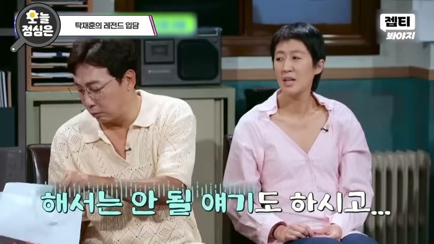
01:32 · 나 때문에 이혼한 거 아닌가 → 손편지면 나 형 안 볼 거예요1분 0초
상대의 진심은 받으면서("형은 책임이 아니에요"), 너무 짠해질 순간을 앞질러 손편지면 안 본다고 막습니다. 분위기가 무거워지지 않게 온도를 미리 낮춘 것입니다. 할머니의 젊을 때 사진과 늙은 모습을 나란히 보며 숙연해졌을 때도 같은 일을 합니다. "그러니까 부모들한테 잘하라고." 하고 교훈을 말한 뒤 곧바로 "자식들한테는 그렇게 잘할 필요 없어." / "나중에 다 몰라, 크면."을 붙입니다. 반쪽짜리 교훈 하나로 숙연함이 오래가지 않게 스스로 풉니다.
써먹기. 누가 과하게 진지한 선물이나 고백을 하려 하면, 편지면 나 운다고 미리 막고 받습니다. 송별회 덕담 끝에 현실적인 반대말 하나를 붙이는 것도 같은 기술입니다. 예: 건강 챙기시라고, 회사는 덜 챙기셔도 된다고 말하는 식입니다.
체면을 세워 주는 한마디
대장님이 말한 '굳은 회의에서 누가 체면을 잃지 않고 다시 말을 꺼낼 수 있게 해 주는 한마디'의 예로 분석좌가 든 장면이 있습니다. 장모님처럼 보이는 출연자가 최악의 사위를 꼽으라는 난처한 질문에 탁재훈을 1순위로 꼽습니다. 그대로 두면 장모는 무례한 사람이 되고 탁재훈은 민망해집니다.
"남편으로서 갖고 싶다"
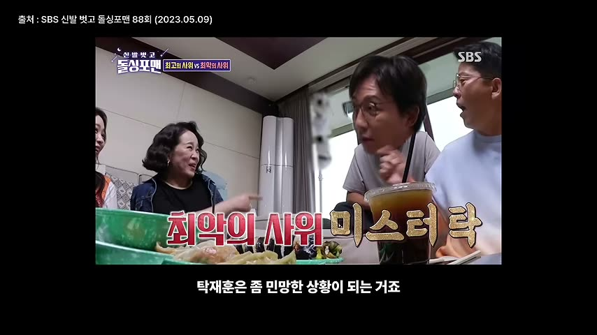
01:18 · 최악의 사위 1순위 → 남편으로서 갖고 싶다26초
'사위로서는 별로'라는 말을 부정하지 않고 역할만 바꿔 칭찬으로 뒤집었습니다. 분석좌의 말대로 장모님도 민망하지 않고 탁재훈도 상처받는 사람이 되지 않았습니다. 위트가 나를 지키는 데서 그치지 않고 상대의 체면까지 지킨 예입니다.
노빠꾸탁재훈에서는 놀린 뒤 상대가 진짜 기죽었을 때 내려오는 장면이 있습니다. 게스트가 자기 분위기가 너무 어둡지 않냐고 걱정합니다.
"근데 저 지금 너무 다크하죠" — "계속하세요 그렇게 조회수 안 나오려면"
"내가 보기엔 지금까지 꼴찌일 거 같은데" — "꼴찌라는 말이 좀 슬프다" — "시행착오라고 생각하셔도 돼요"
"노빠꾸[원문: 노파코] 대세는 지장이 없으니까 편하게 하세요."
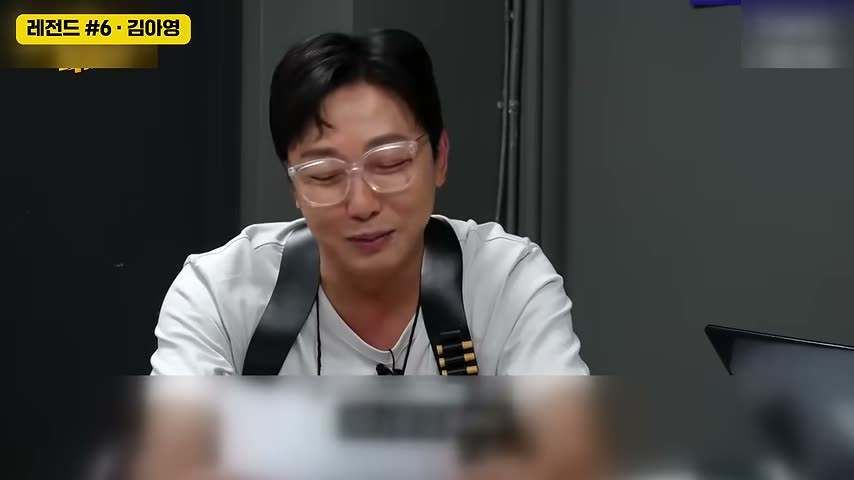
01:19 · 너무 다크하죠? → 꼴찌일 거 같은데 → 시행착오라고 생각하셔도 돼요37초
걱정에 맞장구치는 척 '꼴찌'까지 세게 갔다가, 상대가 슬프다고 하자 바로 '시행착오'로 내려옵니다. 마지막 말은 위로이면서 '너 하나로 우리 채널 안 망한다'는 농담이기도 합니다. 위로 안에 장난을 하나 남겨 분위기를 유지한 것입니다. 줄을 당겼다가 상대가 아파하는 순간 바로 늦춘 셈입니다.
넘었을 때: 짧게 사과하고 다른 길을 연다
줄을 길게 쥐면 결국 문다고 했습니다. 탁재훈도 넘습니다. 차이는 넘은 다음에 있습니다. 자숙 복귀 회차의 퀴즈 '내가 상민이한테 평소에 해 주고 싶었던 말'은 정답 자체가 선을 넘는 문장이었습니다. 탁재훈은 정답이 공개되기 직전에 관계부터 깔아 둡니다.
"너 내가 이뻐하는 거 알잖아." — "그러니까, 나도 욕 들어도 웃잖아."
"상민이 빚 다 갚는 날에 죽는다고." — "나빴다!"
"너무 막 몸이 망가지고[원문: 망고] 빚만 갚았으니까 걱정도 되고" — "그런 의미에서"
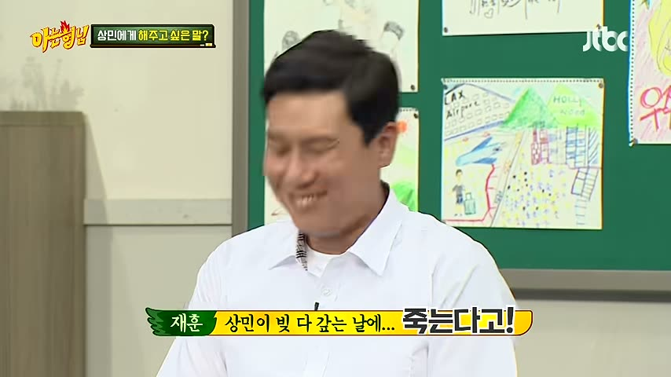
01:31 · 이뻐하는 거 알잖아 → 정답 공개 → 걱정돼서 한 말29초
센 말 앞에는 애정 표현을, 뒤에는 '걱정돼서 한 말'이라는 포장을 붙였습니다. 넘었다가 돌아오는 구조가 뚜렷합니다. 상대가 "나도 욕 들어도 웃잖아"로 미리 받아 준 관계였기에 가능했다는 점도 같이 봐야 합니다.
진짜 넘었을 때는 버티지 않습니다. 같은 회차에서 탁재훈이 자리를 비운 강호동을 두고 엉뚱한 짐작을 했다가 강호동이 즉시 "죄송합니다, 세 번 말해. 하나, 둘, 셋."이라고 요구하자, 탁재훈은 바로 "죄송합니다."로 받았고 판은 이어졌습니다. 노빠꾸탁재훈에서 가족 이야기를 밀고 가다 게스트가 "지금 같이 안 살아서 엄마가 솔로시거든요." 하자 탁재훈은 먼저 "아 그래요? 죄송합니다."라고 사과했습니다. 그리고 나서야 "좀 적적하신가 싶어서"라며 어머니에 대한 엉뚱한 관심으로 방향을 틀었습니다. 순서가 중요합니다. 사과가 먼저고, 개그는 그다음입니다.
반례: 막히거나 되돌아온 장면
반례도 공부 재료입니다. 첫째는 5장의 솔로지옥 장면 바로 뒤입니다. 솔로가 천국이라고 했던 탁재훈에게 상대가 그 틀을 그대로 돌려줍니다.
"그래서 천국을 찾아서 떠나신 거예요?" — "내가 천국으로 찾아 떠난 건 아니고..."
"나 말문 막힌 탁재훈[원문: 짝짝은] 처음 봐." — "네가 뭘 알아, 인마!"
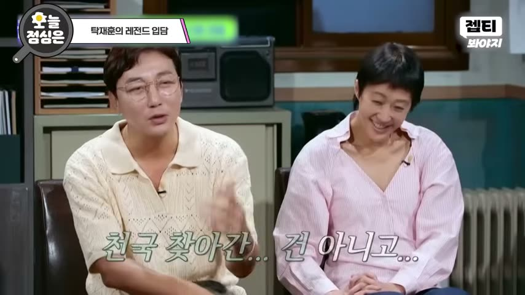
01:30 · (반례) 그래서 천국을 찾아 떠나신 거예요? → 말문이 막힌 탁재훈28초
자기가 만든 비유(솔로는 천국)가 자기 이혼을 가리키게 되자 받을 말이 없습니다. 웃음은 오히려 '말문 막힌 탁재훈'이라는 희귀한 장면에서 나왔습니다. 막혔을 때 "네가 뭘 알아"처럼 짧게 끊은 것은 그나마 좋은 수습입니다. 길게 해명했다면 더 꼬였을 겁니다.
둘째는 남의 아픈 데를 파고들다 같은 약점을 돌려받은 장면입니다. 결혼 뒤 방송을 쉬었던 게스트에게 탁재훈이 결혼을 '잘했는지 못했는지' 판단이 늦었다고 몰아갑니다.
"그걸 좀 빨리 판단을 하셨어야 되는데" — "아니요, 나름 되게 빠르게 판단한 것 같아요." — "아시지 않아요?" — "겪어보셨잖아요."
"제 생각이 그렇다는 것이 또 다른 사연이 있을 거 아니에요."
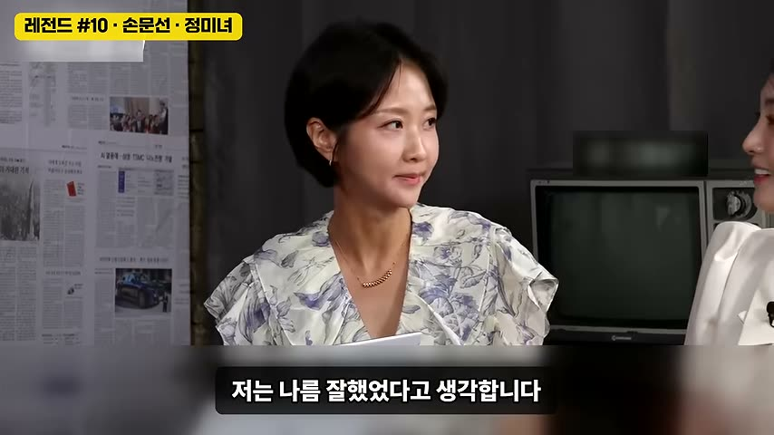
01:26 · (반례) 판단이 늦으셨네 → 겪어보셨잖아요32초
게스트가 '당신도 겪어 봤잖아'로 같은 약점을 돌려주자 탁재훈은 바로 맞받지 못하고 화제를 넘겼습니다. 6장에서 본 "나는 여섯 번 했겠다"와 나란히 놓으면 교훈이 선명합니다. 내가 먼저 꺼낸 약점은 무기가 되지만, 남이 꺼낸 약점은 방어하기 어렵습니다. 남의 아픈 곳을 팔 때는 그 삽이 나에게도 돌아올 수 있다는 걸 기억해야 합니다.
셋째는 줄을 너무 길게 쥔 장면들입니다. 노빠꾸탁재훈에는 여성 게스트를 상대로 이야기를 성적인 쪽으로 끌고 가는 장면이 여러 번 나옵니다. 구조는 대개 같습니다. 순진한 오해처럼 시작해 듣는 사람이 수위 높은 해석을 떠올리게 만들고, 본인은 멈추는 척합니다. 상대가 쓴 모순(아이를 안 좋아했는데 셋을 낳았다)을 성적인 쪽으로 채운 장면도 있습니다. 논리는 맞아도 상대가 반박할 틈이 없어서 웃음보다 불편함이 큽니다. 분석 파일의 결론은 분명합니다. 잘 터진 장면은 대부분 안전한 소리 장난과 비유 문자화였고, 선을 넘은 장면은 대부분 '주의'나 '선넘음'으로 남았습니다.
이 기술을 쓸 때 주의
센 말을 하기 전에는 관계를 확인하고, 하고 나서는 상대의 얼굴을 봅니다. 상대가 웃으면 한 칸 더 가도 되고, 상대가 "슬프다"고 하면 바로 내려옵니다. 넘었다는 신호가 오면 해명보다 사과가 먼저입니다. 그리고 늘 분석좌의 질문으로 돌아갑니다. 우리가 이 대화를 왜 하고 있는가. 회의라면 결론을 내려고, 모임이라면 다 같이 즐거우려고 하는 것입니다. 웃음이 그 목적을 해치면 그 웃음은 실패입니다.
CHAPTER 07
내 것으로 만들기
상황별 처방과 연습법
상황별 처방
앞의 열한 가지를 회사와 모임에서 자주 만나는 상황에 맞춰 다시 묶었습니다. 예시는 모두 써먹는 법을 보여 주려고 지어낸 것입니다.
상사가 양자택일로 몰아붙일 때: 고르지 말고 빈칸을 되묻습니다(④). 예: 이번 주에 끝낼 거냐 다음 주에 끝낼 거냐고 물으면, 이번 주에 끝내면 다음 주 일이 하나 더 오는지부터 여쭤봅니다. 배당을 묻는 구조입니다. 질문 자체가 이상하면 틀을 봅니다(⑦). 왜 선택지가 그 둘뿐인지 웃으며 묻습니다.
회의가 굳었을 때: 내가 먼저 낮아집니다(⑩). 예: 아무도 의견을 안 내면, 제 의견은 늘 첫 번째로 기각되니까 제가 먼저 기각당하겠다고 시작합니다. 누가 실수해서 분위기가 얼었으면 그 사람의 말을 다른 역할로 바꿔 칭찬합니다(⑪, 최악의 사위 → 남편으로서).
처음 만난 사람과 이야기할 때: 공격은 쓰지 않습니다. 상대 말을 듣고 그 안의 빈칸을 생활감 있게 채워 단정한 뒤 세부를 하나 더 묻습니다(③). 예: 주말에 등산을 다닌다고 하면, 산악회 회장님이시냐고 묻고 몇 기수인지 한 번 더 묻습니다. 듣고 있다는 신호가 되고, 상대가 웃으며 정정할 기회도 생깁니다.
놀림받을 때: 부정하지 않고 인정한 뒤 한 칸 더 갑니다(⑩, ⑥). 예: 커피를 너무 마신다고 하면, 그걸로 지면 저는 원두를 직접 볶겠다고 받습니다. 놀림이 심하면 그 사람이 쓴 문장 틀을 그대로 돌려줍니다(⑨).
칭찬받을 때: 손사래 대신 부풀리거나 낮춥니다. 예: 꼼꼼하다는 칭찬에 옆 팀 오타까지 보인다고 받거나(⑥), 매일 오늘이 마지막 출근이라고 생각하고 나온다고 받습니다(⑩).
누가 너무 진지해질 때: 감동을 미리 끊습니다(⑪). 예: 송별회에서 동료가 편지를 꺼내려 하면, 편지면 저 진짜 울 거라서 안 받겠다고 웃으며 받습니다.
모르는 얘기가 나올 때: 아는 척하지 말고 소리로 받거나(①) 내 재료로 판을 옮깁니다(⑧).
연습법
대장님이 준 공부법을 그대로 연습으로 옮기면 이렇습니다.
장면을 볼 때 상대의 직전 말에서 멈춥니다. 이 책의 클립은 모두 상대가 말을 꺼내기 몇 초 전부터 시작하니, 상대 말이 끝나는 순간 재생을 멈추세요.
멈춘 상태에서 내 답을 소리 내어 먼저 말해 봅니다. 머릿속으로만 하면 늘 그럴듯해 보입니다. 입으로 말해야 얼마나 느린지 압니다.
그다음 탁재훈의 답을 보고, 그 답이 열한 가지 중 무엇이었는지 이름을 붙입니다. 이름을 붙여야 다음에 꺼내 쓸 수 있습니다.
상대 말에서 단어 하나에 밑줄을 긋는 연습을 합니다. 소리가 비슷한 말이 있는지(①), 비유인지(②), 빠진 육하원칙이 무엇인지(③) 세 가지만 확인합니다.
분석좌의 주문을 습관으로 만듭니다. 불리한 말을 들으면 속으로 '그래, 이 말이 전부 사실이라고 치자'라고 한 번 말하고, 그 전제 안에서만 가능한 이야기를 찾습니다.
하루에 한 번만 씁니다. 결정타는 대부분 한 문장, 짧으면 한 단어였습니다. 많이 하는 것보다 짧게 한 번 하고 상대 반응을 보는 것이 줄 길이를 익히는 길입니다.
연습 문제 1: 반값 콘서트
김장훈이 자기 공연 VIP석을 반값에 판다고 합니다. 여기서 멈추고 내 답을 먼저 말해 보세요.
"완전히 그냥 이제는 반값 77,000원 하고" — "VIP가요?" — "왜 싸게 받는 거예요 진짜?"
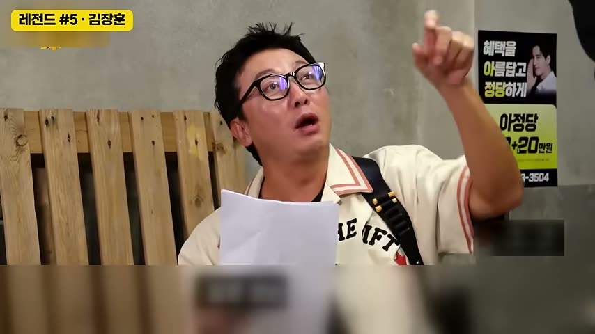
01:16 · 연습 문제: 반값 77,000원 → 왜 싸게 받는지 알겠어요34초
탁재훈 쪽의 답은 이것이었습니다. "아니 그게 아니고 반은 관객이 불러서 그런 거 아닙니까?" 할인의 이유라는 빈칸을 엉뚱하게 채웠습니다(③). 관객 떼창이라는 공연의 특징을 '노래를 반만 하니까 반값'으로 뒤집은 것입니다. 바로 말하지 않고 "아 이거 왜 싸게 받는지 알겠어요."로 뜸을 들인 것도 눈여겨보세요. 뜸이 길수록 답이 크게 터집니다.
연습 문제 2: 투자 권유 전화
탁재훈이 아침에 투자 권유 전화를 받았다는 얘기를 꺼냅니다. 옆 사람이 한마디 합니다. 여기서 멈추세요.
"새로운 투자 상품이 있어서 전화를 드렸습니다." — "형이 돈 있는 줄 아나 보네."
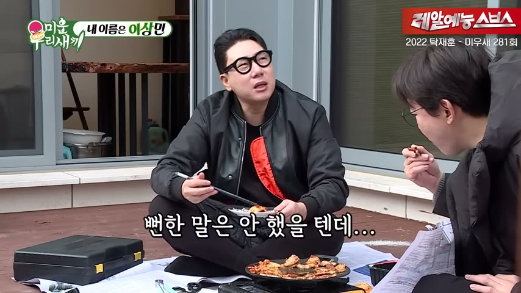
01:14 · 연습 문제: 투자 권유 전화 → 네 전화번호를 가르쳐 줬거든53초
대부분은 돈 없다는 대답을 떠올립니다. 탁재훈은 그 답을 스스로 먼저 버립니다. "저 투자할 돈이 없어요 뭐 이런 얘기는 너무 뻔하고." 그리고 판 밖의 해결책을 꺼냅니다. "네 전화번호를 내가 가르쳐줬거든." 항의가 나오자 "야 너가 잘 됐으면 좋아서 그래." 귀찮은 일을 눈앞의 상대에게 넘기면서 선의로 포장했습니다(⑧과 ⑨의 결합). 뻔한 답이 먼저 떠오르면, 그 답을 버리는 것부터가 시작이라는 걸 보여 주는 장면입니다.
기술 카드 한눈에
① 소리 비틀기: 상대 단어와 소리가 비슷한 다른 말로 받는다. 끝은 말이 되는 쪽으로. 대표 장면: 런칭 → 런지 → 렌즈.
② 문자 그대로 받기: 비유·관용구·문법을 글자 그대로 받는다. 대표 장면: 까치둥지 → 새가 앉은 적 있어요?
③ 단정하고 한 번 더 묻기: 빠진 사정을 생활감 있게 채워 단정하고 세부를 하나 더 묻는다. 대표 장면: 중국집 주방이야 홀이야.
④ 되물어 공 넘기기: 고르지 말고 빈칸을 되묻는다. 대표 장면: 배당이 어떻게 되는데?
⑤ 설정 올라타기: 자리의 설정을 사실로 받아 그 언어로 말한다. 대표 장면: 경찰서예요, 경찰서.
⑥ 끝까지 부풀리기: 한 칸씩 키우고, 비유 하나를 끝까지 쓴다. 대표 장면: 지각으로 지면 아예 안 나와, 밑반찬.
⑦ 틀 깨기: 질문과 이름의 전제를 뒤집는다. 대표 장면: 솔로가 얼마나 천국인데, 같은 나라잖아요.
⑧ 판 밖 재료: 선택지 밖, 그러나 현장에 있는 재료를 가져온다. 대표 장면: 오 마이 줄리아, 꼬깔콘.
⑨ 같은 틀로 돌려주기: 상대 문장의 리듬과 전제를 그대로 돌려준다. 대표 장면: 가 달라 하는데 왜 앉아 있어요?
⑩ 먼저 인정하고 더 나가기: 부정하지 않고, 먼저 꺼내고, 더 낮춘다. 대표 장면: 자숙고에서 전학 온 탁재훈, 지갑 좀 갖고 올게요.
⑪ 온도 조절: 감동은 미리 끊고, 체면은 세워 주고, 넘으면 사과부터. 대표 장면: 손편지면 안 볼 거예요, 남편으로서 갖고 싶다.
마치며
열한 가지로 나눴지만 뿌리는 하나입니다. 상대의 말을 끝까지 듣고, 그 말을 부정하지 않고, 그 안에서 다른 길을 찾는 것. 분석좌는 이걸 레일이라 불렀고, 대장님은 천장의 호롱불이라 불렀습니다. 그리고 그 길이 어디까지 가도 되는지는 강아지 줄의 길이가 정합니다.
다음에 탁재훈의 장면을 볼 때는 웃긴 말이 나오기 전에 한 번 멈춰 보세요. 상대가 방금 무슨 말을 했는지, 그 말에 어떤 빈칸이 있었는지, 나라면 뭐라고 했을지. 그 몇 초가 이 책의 진짜 본문입니다.